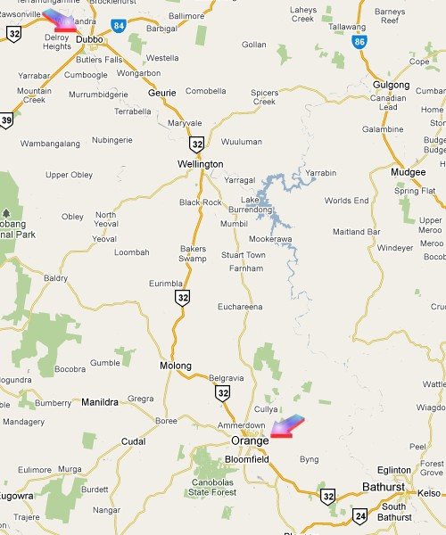

New South Wales - NSW Central West Route (version 1.6)
Route design by Chris Nelson and Brian Bere-Streeter (v1.6 scenery upgrade)
Overview
This route captures the wide open expanses of Australia's outback perfectly. The route starts at Orange East Fork (320km west of Sydney) and heads northwest to Dubbo (460km) via Wellington; the alternate route via Molong (Molong - Dubbo closed in 1985) is also modelled. The Orange - Molong line is part of the western mainline from Sydney to Parkes and Broken Hill.
Total mainline trackage: ~330km.
Stations and sidings: 32.
Molong was the terminus of the main western line from Sydney from 1886-1893. The 129km branch line railway from Molong to Dubbo opened in 1925 and basically paralleled the main Orange - Dubbo railway while serving the many communities along the way. Operations ceased in 1985 except for 2 km at Molong that is used for a passing siding on the main western line to Broken Hill.
During the steam period, banking was prevalent between Orange and Molong, as well as south from Dubbo on the Wellington line.
Passenger services included: The Central West Express (Sydney to Dubbo), The Indian Pacific (Sydney to Perth via Molong), Forbes and Coonamble Mail.
Heavy wheat traffic could be found on both lines. Interstate traffic became more common with the introduction of the Standard Gauge to Adelaide in 1969.
Steam was all but removed from this area on main line traffic in 1968, with the shunters being withdrawn in 1971.
The route has been significantly upgraded by Brian Bere-Streeter who has added track and scenery items. Trackage added includes the North Fork from the Molong line round to Orange station, the missing cross-overs to allow Coonamble and Merrygoen passenger trains to run direct into or out of Dubbo platform from those two branches and a fair bit of work at Troy Junction, adding multiple stock loop sidings and the Dubbo Meat Works sidings.

Prototype Operator: New South Wales Government Railways and its successors.